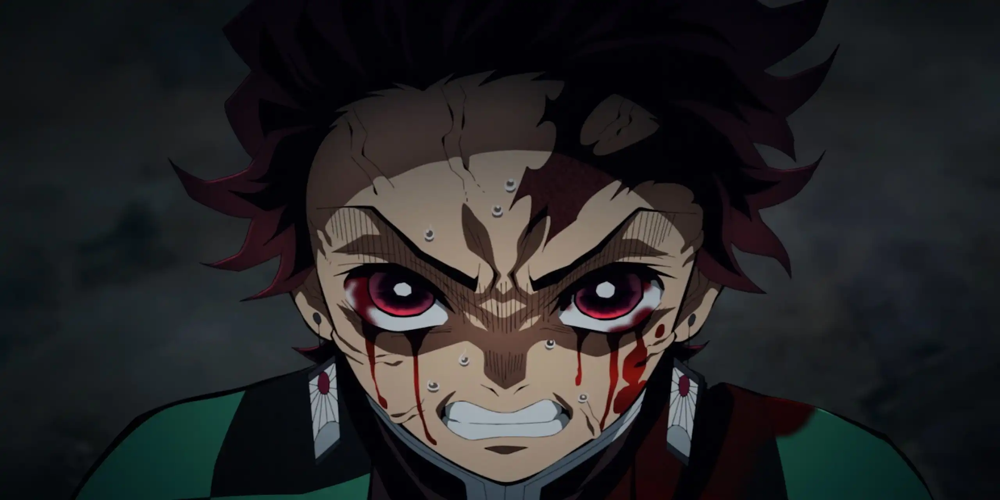

<div class="sidebar p-4 aurora">
  <!-- Icono de gremio -->
  <i class="fa-brands fa-phoenix-framework mx-4 fa-2xl text-center">
    <span class="aurora">katanashizuten</span>
  </i>
  <!-- Logo de Avatar y Name Inicio -->
  <div class="row">
    <div class="col-12">
      <div class="avatar text-center">
        
      </div>
    </div>
  </div>
  <div class="row">
    <div class="col-12">
      <div class="nameAvatar text-center">
        <h1>TheBroodPort</h1>
        <p>Arquero</p>
      </div>
    </div>
  </div>
  <div class="px-2">
    <hr class="m-0" />
  </div>

  <!-- Logo de Avatar y Name Final -->

  <!-- Lista de campos de vistas Inicio -->

  <!-- Lista de campos de vistas Final -->
</div>
